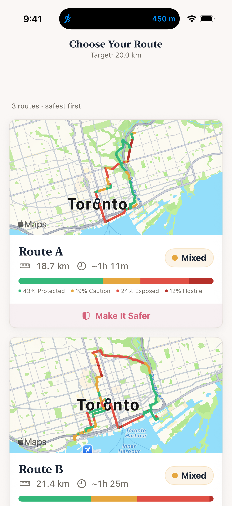
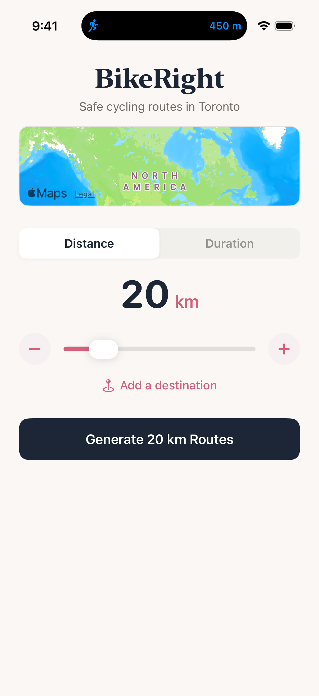
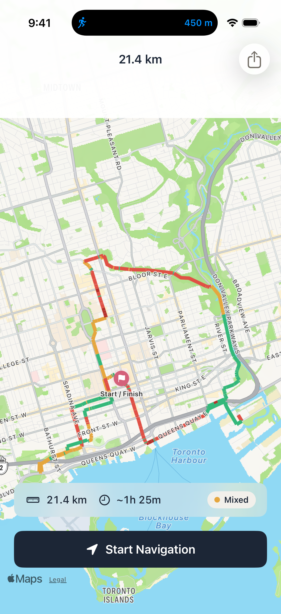
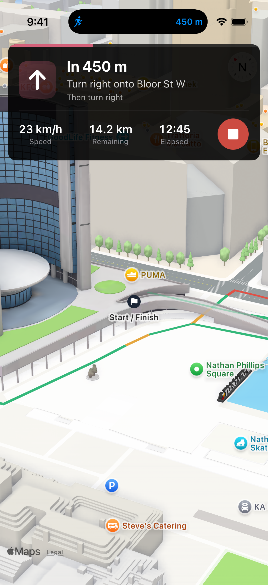
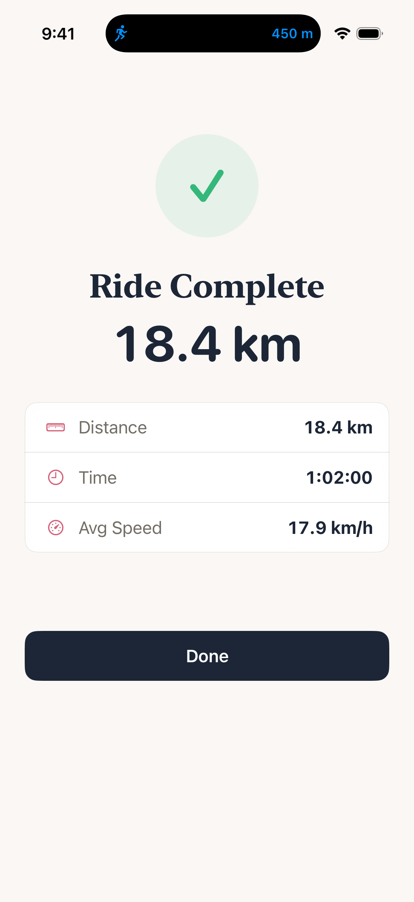

Randomly generated bike loops that maximize bike lanes, paths, and quiet streets — so you can explore your city with confidence.
Download on the App Store
Want to ride 15 kilometers? Only have 45 minutes? Choose distance or duration and BikeRight does the rest.
Instantly get three loop routes — each one scored and optimized for bike lanes, multi-use paths, and streets where cars give you room to breathe.
Follow turn-by-turn navigation built for cyclists. Discover bike-friendly streets you never knew existed. Every loop starts and ends right where you are.
Safety isn't an afterthought. BikeRight chooses the routes it shows you by the quality and quantity of cycling infrastructure — the safest path is always the default.

Distance, destination or time — pick your goal and let BikeRight do the rest.
Each route is ranked by how safe it is, with a full safety breakdown — see exactly how much is protected cycling infrastructure.

Green is protected lanes. Yellow is shared roads. You'll always know what's coming.

3D navigation so clear you barely have to glance down. Speed, distance remaining, elapsed time — all up front.

Distance, time, average speed. A solid ride and a city you know a little better now.
Open the app and go. No sign-up, no login, no profile. BikeRight works the moment you tap it.
Route generation happens entirely on-device. Your GPS coordinates and ride data are never sent to our servers — ever.
We don't collect usage data, behavioral analytics, or any identifying information. What you do with the app is your business.
One-way trips to any destination, scored by safety. Plus a standalone Apple Watch app with haptic turn-by-turn navigation.
BikeRight now has a blog for updates and release notes — plus corrected App Store links and a favicon fix.
Beta testing is done. BikeRight is now available to everyone, with Live Activities and Dynamic Island support.
Yes — completely free. No subscriptions, no in-app purchases, no ads. Every feature, including Apple Watch and destination mode, is included.
BikeRight analyzes each route segment against OpenStreetMap cycling infrastructure data — protected bike lanes, multi-use paths, shared roads, and unprotected streets. Each route gets an overall safety score so the safest option is always at the top.
No. Route generation and safety scoring happen entirely on your device. Your GPS coordinates are never sent to our servers — we don't have any. There are no analytics, no accounts, and no tracking.
Yes. BikeRight has a standalone Apple Watch app with haptic turn-by-turn navigation. It even taps out safety ratings for upcoming road segments so you can keep your eyes on the road.
Yes. Tap "Add a destination" on the home screen, enter an address, and BikeRight will find multiple routes — each scored and ranked by safety. Great for commutes or riding to a friend's place.
Not yet — BikeRight is iOS only for now. If you'd like to see an Android version, let us know. Your voice matters.
No accounts · No tracking · No ads · Ever
Built for riders who've been nervous on roads before. Every route is scored for safety, not speed.
Download Free on App Store